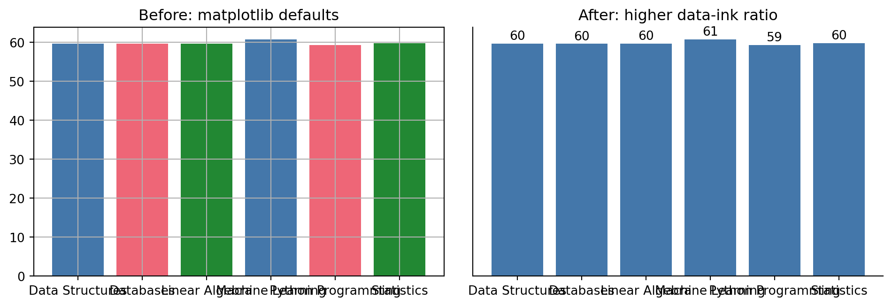
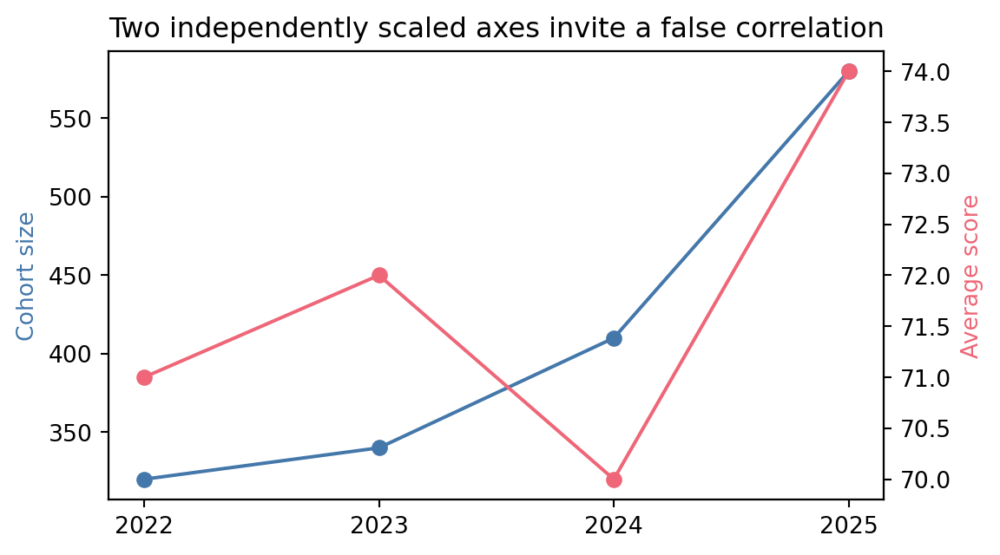
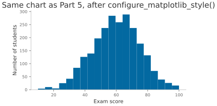
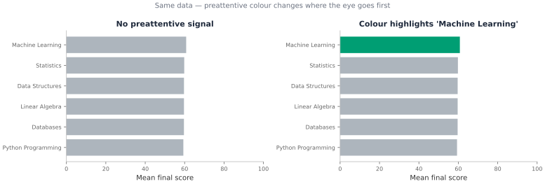

This notebook assumes you have completed Part 5 (05-matplotlib.ipynb) and Part 6 (06-lets-plot.ipynb). Parts 5 and 6 taught you how to make a chart at all. This part is about taste: which chart to make, what to leave out of it, and how to brand it once it is ready to show someone other than yourself, using this project’s own ark.plot module.
Topic
Why it matters
Chart selection
The question decides the chart, not the data type
Data-ink ratio
Every pixel that is not data is a tax on the reader’s attention
Common chart lies
The same data, drawn to mislead instead of inform
Tables vs. charts
Exact lookup wants a table; pattern recognition wants a chart
House style
Replacing per-chart styling with one reusable theme
Callout guide
Key Concept
Core idea with precise definition
Example
Worked illustration
Activity
Hands-on challenge to try yourself
Common Mistake
Bug pattern to watch for
Pro Tip
Production-grade habit
Learning Objectives
By the end of Part 7 you will be able to:
#
Skill
Covered in
1
Choose a chart type based on the question, not habit
Sec. 1
2
Recognise and avoid the most common ways charts mislead
Sec. 2
3
Decide when a table communicates better than a chart
Sec. 3
4
Apply ark.plot’s house theme to matplotlib and lets-plot charts
Sec. 4
5
Produce one polished, captioned chart from a messy dataset
Capstone
1. Picking the Right Chart, and Cutting What Does Not Help
The most common visualisation mistake is not a styling problem, it is a selection problem: building a chart type out of habit instead of asking what question it needs to answer. A pie chart cannot answer “which course improved the most,” because comparing angles is something people are measurably worse at than comparing positions along a shared axis. That is not opinion, it is the finding of a well-known study by Cleveland and McGill (1984) ranking how accurately people read different visual encodings: position along a common scale first, then length, then angle, then area, with colour saturation last.
Data-ink ratio, a term from Edward Tufte’s The Visual Display of Quantitative Information, is the proportion of a chart’s ink that represents actual data, as opposed to gridlines, borders, redundant legends, and other decoration. Maximising it does not mean a bare chart, it means every mark earns its place. Compare matplotlib’s defaults to a version with the same data and nothing extra:
import matplotlib.pyplot as pltcourse_means = results.groupby("course")["exam_score"].mean()fig, axes = plt.subplots(1, 2, figsize=(10, 3.5))# Left: matplotlib defaults. Box on all four sides, both gridlines, a# legend the bar colours already make redundant since each bar has its# own label directly underneath it.axes[0].bar(course_means.index, course_means.values, color=["#4477AA", "#EE6677", "#228833"])axes[0].set_title("Before: matplotlib defaults")axes[0].grid(True)# Right: same data, decluttered. No top/right spines, no gridlines, the# value printed directly on each bar instead of relying on the y-axis.axes[1].bar(course_means.index, course_means.values, color="#4477AA")axes[1].spines["top"].set_visible(False)axes[1].spines["right"].set_visible(False)axes[1].set_yticks([])for i, value inenumerate(course_means.values): axes[1].text(i, value +1, f"{value:.0f}", ha="center")axes[1].set_title("After: higher data-ink ratio")fig.tight_layout()

Key Concept: Data-ink ratio
Every gridline, border, and redundant legend entry competes with your data for the reader’s attention. The right-hand chart above removes the y-axis entirely (the labelled bars make it redundant) and the top/right spines, and prints each value once, directly on its bar, instead of forcing the reader to trace a line back to an axis. Decluttering is not about making a chart sparse for its own sake, it is about removing anything that does not carry information.
One message per chart is the last principle worth internalising before the chart-lie gallery in Section 2: a chart that tries to answer three questions at once usually answers none of them clearly. If you find yourself adding a third colour dimension, a secondary y-axis, and a trend line to the same chart, that is a sign you need two charts, not one crowded one.
2. Common Chart Lies
None of the charts below contain incorrect numbers. Each one is drawn in a way that makes the reader’s brain compute the wrong conclusion from correct data. Recognising these on sight, in your own draft charts, is the actual skill.
The two charts above show the exact same three numbers. The right-hand one starts its y-axis at 65 instead of 0, which makes a 6-point difference between courses look like one course scores three times higher than another. Bar charts in particular must start at zero, because the reader judges bar height (and therefore a ratio) automatically. Line charts can sometimes justify a non-zero baseline if it is labelled clearly, bars almost never can.
Cohort size and average score both happen to rise together in this chart, but each axis was scaled independently to make the two lines fit nicely, which is exactly what makes dual axes dangerous: you can almost always pick scales that make two unrelated series appear to move together. If two series genuinely need comparing, plot their percent change from a common baseline on one shared axis instead, or use two separate charts stacked vertically with the same x-axis.
enrollment = pd.Series( {"ML": 145, "Data Structures": 132, "Statistics": 98, "Databases": 41, "Networks": 28, "Ethics": 15})fig, axes = plt.subplots(1, 2, figsize=(10, 4))axes[0].pie(enrollment.values, labels=enrollment.index, autopct="%1.0f%%")axes[0].set_title("Pie: hard to rank six similar slices")axes[1].barh(enrollment.index[::-1], enrollment.values[::-1], color="#4477AA")axes[1].set_title("Bar: ranking is immediate")fig.tight_layout()

Common Mistake: Too many pie slices
Six categories is already past where a pie chart works: Ethics and Networks are visibly different bars, but as pie slices they are nearly impossible to rank by eye, exactly the angle-judgment weakness Cleveland and McGill measured. A horizontal bar chart, sorted by value, answers “which course has the most enrollment” instantly. Reserve pie charts for two or three categories where one slice is clearly dominant, and prefer a bar chart almost everywhere else.
3. When a Table Beats a Chart
A chart is for spotting a pattern at a glance. A table is for looking up an exact number, or comparing many numbers a reader needs to cite precisely, such as a results appendix someone will quote in a report. This project’s ark.plot.gt_style module wraps great_tables with the same brand colours used everywhere else, so a results table looks like it belongs in the same document as the chart next to it:
from great_tables import GT, md as gt_mdfrom ark.plot.gt_style import themed_gtsummary = results.groupby("course")["exam_score"].agg(mean="mean", std="std", n="count").round(1).reset_index()table = themed_gt( GT(summary) .tab_header(title=gt_md("**Exam Score Summary**"), subtitle="Mean, spread, and sample size per course") .cols_label(course="Course", mean="Mean", std="Std. Dev.", n="N"), n_rows=len(summary),)table
Exam Score Summary
Mean, spread, and sample size per course
Course
Mean
Std. Dev.
N
Data Structures
75.6
10.2
120
Machine Learning
69.4
7.8
120
Statistics
73.7
10.6
120
Pro Tip: Pair a chart with a table, do not choose between them
A results section in a report often wants both: the histogram from Part 5 to show the shape of the distribution, and a table like the one above to give the exact numbers someone will want to quote. Neither replaces the other.
4. From Default to Branded
Parts 5 and 6 used each library’s own defaults on purpose, so the charts in those notebooks teach the mechanics without a styling layer in the way. This project’s ark.plot module exists precisely so you do not have to restate the same colours, fonts, and spacing on every single chart by hand. Compare a lets-plot chart with and without it:
from lets_plot import labs, scale_fill_manualfrom ark.plot.theme import modern_theme, pro_colorsbranded_chart = ( ggplot(results, aes(x="exam_score", fill="course"))+ geom_histogram(bins=20, alpha=0.85)+ scale_fill_manual(values=pro_colors)+ labs( title="Exam score distribution by course", x="Exam score (0-100)", y="Number of students", fill="Course", )+ modern_theme(grid=True))branded_chart + ggsize(450, 300)
modern_theme() is one more + layer, exactly like every geom_*() in Part 6. scale_fill_manual(values=pro_colors) pins each course to the brand palette, and labs() replaces the auto-generated column names with reader-facing text. gggrid() puts both charts side by side in one output, which is the cleanest way to show a before/after comparison in a single cell:
The matplotlib equivalent, ark.plot.matplot_theme.configure_matplotlib_style(), works differently: it updates matplotlib’s global rcParams, so it applies to every chart drawn after you call it, not just one. That is the right trade-off for a notebook or script that draws many charts you want to look consistent, at the cost of not being able to mix styled and unstyled charts in the same figure:
from ark.plot.matplot_theme import configure_matplotlib_styleconfigure_matplotlib_style(font_size=10, fig_width=5)fig, ax = plt.subplots()ax.hist(results["exam_score"], bins=20)ax.set_xlabel("Exam score")ax.set_ylabel("Number of students")ax.set_title("Same chart as Part 5, after configure_matplotlib_style()");

Activity 1 - Brand a Boxplot
Goal: Rebuild Part 5’s seaborn boxplot of exam_score by course, but after calling configure_matplotlib_style() from this section. No other code changes: the same sns.boxplot() call should now pick up the brand colour cycle automatically.
import seaborn as sns# TODO: boxplot of exam_score by course, styled by the already-active house theme...
Ellipsis
Pro Tip: A house theme is a contract, not a one-off setting
The value of ark.plot is not any single colour choice, it is that every chart in this project, in any notebook, in any report, reaches for the same module instead of redefining its own palette. When the brand colours change, they change in one file.
Capstone: Rescue a Misleading Chart
Below is a chart with three problems from this notebook stacked together: a truncated y-axis, no axis labels, and matplotlib’s unbranded defaults. Fix all three, then add one caption sentence stating the chart’s single message.
# The chart to rescue. Run this first to see what is wrong with it.fig, ax = plt.subplots(figsize=(5, 3))ax.bar(course_means.index, course_means.values, color=["#4477AA", "#EE6677", "#228833"])ax.set_ylim(65, 78)fig.tight_layout()

Capstone Exercise - Fix the Chart
Goal:
Fix the y-axis to start at 0
Add an x and y axis label
Apply the house style with configure_matplotlib_style()
Add one print statement with a one-sentence caption stating the chart’s single message
Hint:configure_matplotlib_style() only affects charts drawn after it runs, so call it before plt.subplots(), not after.
# TODO: rescue the chart...print("Caption: ...")
Caption: ...
Summary
Concept
Key rule
Chart selection
Let the question pick the chart; position beats angle beats area for accurate reading
Data-ink ratio
Every gridline, border, and redundant legend competes with your data
One message per chart
A third colour dimension or a second y-axis is a sign you need two charts
Truncated axes
Bar charts must start at 0; a non-zero baseline exaggerates differences
Dual axes
Independent scales can make any two series look correlated
Pie charts
Fine for 2-3 dominant slices, a sorted bar chart almost everywhere else
Tables vs. charts
Charts for patterns, tables for numbers a reader will quote exactly
ark.plot house style
One module, not one styling decision repeated on every chart
Further reading
Edward Tufte, The Visual Display of Quantitative Information - the original case for data-ink ratio
William Cleveland and Robert McGill, “Graphical Perception: Theory, Experimentation, and Application to the Development of Graphical Methods” (1984) - the perceptual ranking behind “position beats angle”
Stephen Few, Show Me the Numbers - practical chart and dashboard design
Alberto Cairo, The Truthful Art - visualisation ethics and how charts deceive
Cole Nussbaumer Knaflic, Storytelling with Data - the most widely read practitioner book on this topic
Claus Wilke, Fundamentals of Data Visualization (free online) - a modern, ggplot-oriented treatment, directly relevant given lets-plot’s ggplot heritage
This completes the data visualisation series within Part 1: Python Basics. The next tutorials folder, 02-dev-tools, covers the engineering practices used from here on, once it gets the same rewrite treatment as Parts 1-7.